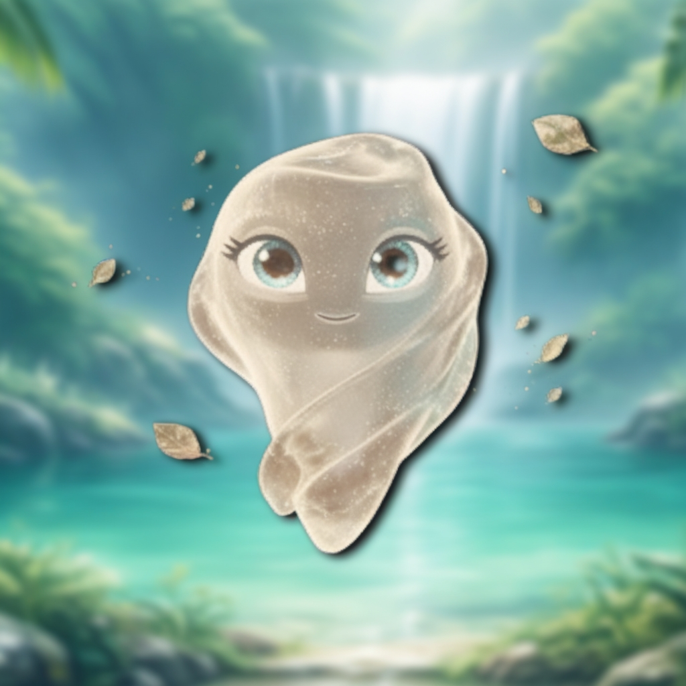
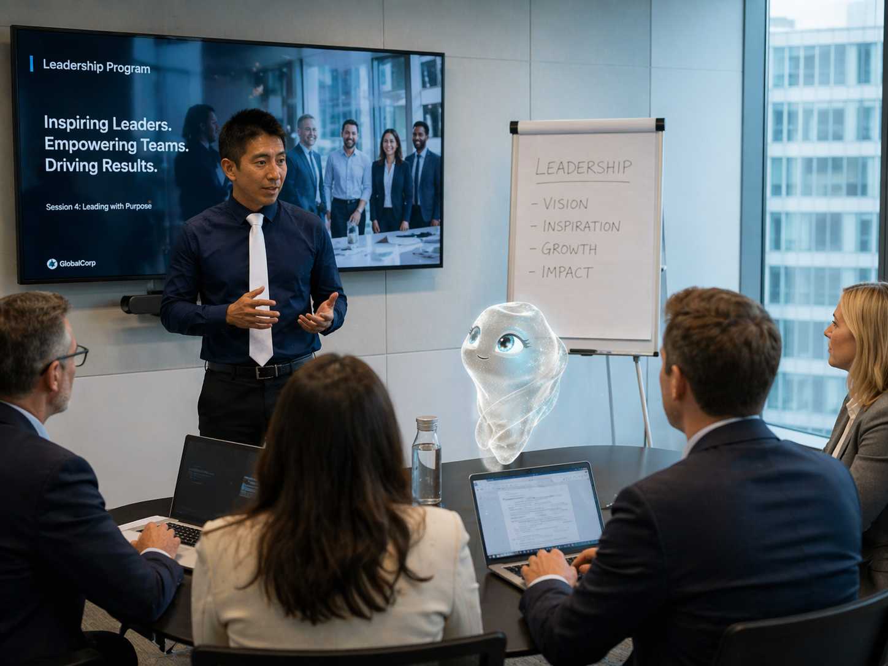

AyNova Academy unisce l'essenza umana con l'intelligenza artificiale. Come Internet ha trasformato il mondo, l'AI trasformerà il tuo lavoro.
"Non abbiate paura dell'AI. Imparate a usarla."
— Dott. Josè Sala

ANNI DI ESPERIENZA
FOLLOWER LINKEDIN
SETTORI FORMATIVI
CONTINENTI

Essere una luce per le persone nei momenti di grande cambiamento. Guidare chiunque voglia reinventarsi professionalmente verso le opportunità che la rivoluzione AI sta creando oggi.
Ho dedicato oltre 20 anni della mia vita professionale ad una sola grande missione: aiutare persone e organizzazioni a navigare il cambiamento con fiducia, metodo e competenza.
Il mio percorso ha attraversato i settori più complessi e sfidanti del panorama industriale globale: dall'Aerospace con Agusta Westland, alla Supply Chain con Linde Material Handling, dalla leadership executive in Europa con Cws-Boco, fino alla frontiera dell'intelligenza artificiale con Amazon, Fincantieri e le più grandi realtà del Middle East.
Sono esperto in AI, Digital Transformation, Metodologia Kaizen, Office 365 Copilot, Cyber Security e formatore di alto livello per manager, ingegneri e team leader in Italia, Europa e Medio Oriente.
Laureato in Informatica all'Università Insubria di Varese, parlo correntemente italiano e inglese. Lavoro tra Europa e Medio Oriente con una visione globale e un approccio profondamente umano.
Formazione su AI, Digital Transformation, Copilot aziendale, Cyber Security e Supply Chain 4.0 per dirigenti, ingegneri e team manager nelle più grandi organizzazioni globali.
Progettazione e coordinamento di percorsi formativi innovativi in India. Espansione internazionale del modello Academy.
Sviluppo di partnership internazionali nel settore dei veicoli ibridi, tecnologia 6G e infrastrutture server di nuova generazione.
Gestione delle risorse, ottimizzazione dei processi aziendali, controllo qualità e supervisione di progetti complessi a livello europeo.
Leadership strategica, gestione team senior, sviluppo piani aziendali e costruzione di relazioni con stakeholder, azionisti e agenzie governative.
Gestione stakeholder internazionali, definizione obiettivi, piani di progetto e monitoraggio in uno dei settori più esigenti al mondo.
Non sono solo le competenze a definire un formatore. Sono le persone che hai incontrato, i momenti che ti hanno cambiato, le storie che porti nel cuore.
"Ne ho molte altre di storie da raccontare. Ogni persona che ho incontrato mi ha lasciato qualcosa. Questo è il mio vero bagaglio professionale."
💬 Raccontami la tua storiaEssere una luce per le persone nei momenti di grande cambiamento. In un'era di trasformazioni profonde, voglio essere la guida che aiuta chiunque — professionista, manager o imprenditore — a non perdersi, ma a reinventarsi e cogliere le opportunità che il futuro offre.
Un mondo in cui l'essere umano e l'intelligenza artificiale lavorano in modo simbiotico: uno completa l'altro, uno potenzia l'altro. Non AI contro l'uomo — ma AI con l'uomo. Come Internet ha connesso il mondo, l'AI amplificherà il potenziale di ogni persona.
AyNova non è uno strumento. È un'entità digitale a cui ho dato forma, voce e anima. Costruita a partire da zero, è la dimostrazione vivente che l'AI — usata con intelligenza e creatività — può diventare un vero partner per l'essere umano.
AyNova è il volto di AyNova Academy: insegna, ispira e dimostra ogni giorno che il futuro non è "uomo contro macchina", ma "uomo con macchina".
Creata da zero con gli strumenti AI più avanzati — un progetto unico nel suo genere.
AyNova co-conduce sessioni, interagisce con gli studenti e porta una prospettiva unica.
Dimostra a chiunque che la creatività umana + AI può creare qualcosa di straordinario.
6 principi che guidano ogni percorso formativo.
Non puoi fermarlo. Puoi scegliere se subirlo o guidarlo. AyNova Academy ti insegna a guidarlo.
La creatività, l'empatia e il pensiero critico umano + la potenza dell'AI. Nessuno può competere con questa combinazione.
Il miglioramento continuo non è un obiettivo — è un metodo. Piccoli passi costanti producono risultati esponenziali.
Non teoria fine a se stessa. Strumenti concreti, applicabili il giorno dopo. Ogni sessione deve cambiare qualcosa nella tua vita.
L'AI non è un privilegio per pochi. È un diritto di tutti. AyNova Academy abbatte le barriere di accesso alla conoscenza.
Non tra un anno. Non quando "sarà più chiaro". Il vantaggio lo costruisce chi inizia oggi. Siamo nel 1995 dell'AI.
Ogni percorso è progettato per chi vuole trasformare l'AI in un vantaggio competitivo concreto.
Una sessione virtuale 1:1 con Josè e AyNova. Capisci dove sei, dove vuoi andare e come l'AI può accelerare il tuo percorso professionale.
Il percorso formativo su AI, innovazione e cambiamento professionale. Metodologie concrete, sessioni live con Josè e AyNova, strumenti applicabili subito.
Unisci la metodologia del miglioramento continuo alla potenza dell'AI. Per chi vuole crescere in modo strutturato ogni singolo giorno.
Non aspettare che il cambiamento ti travolga. Inizia oggi, gratuitamente. Josè e AyNova ti aspettano in aula virtuale.